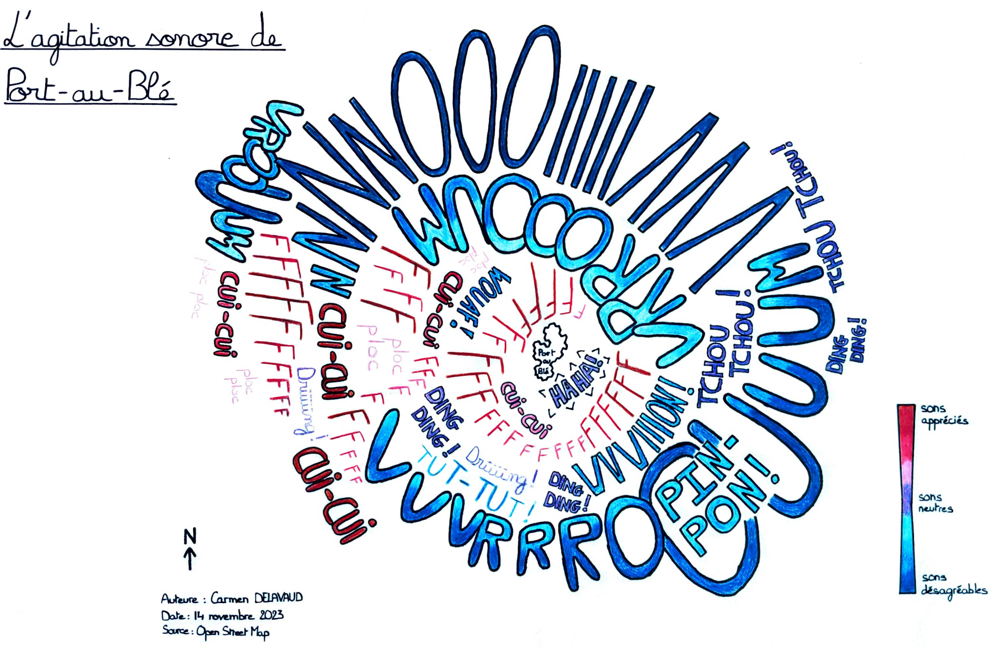
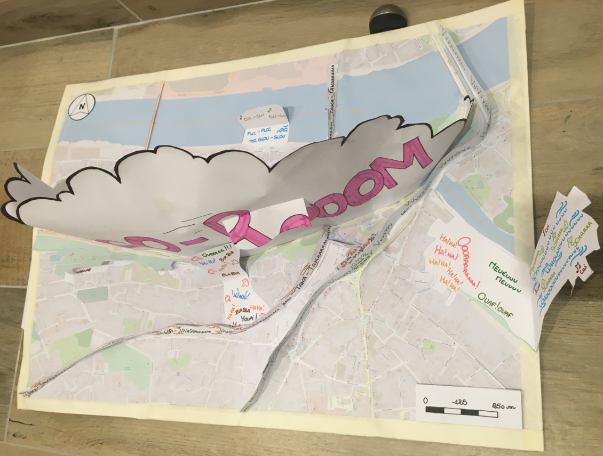
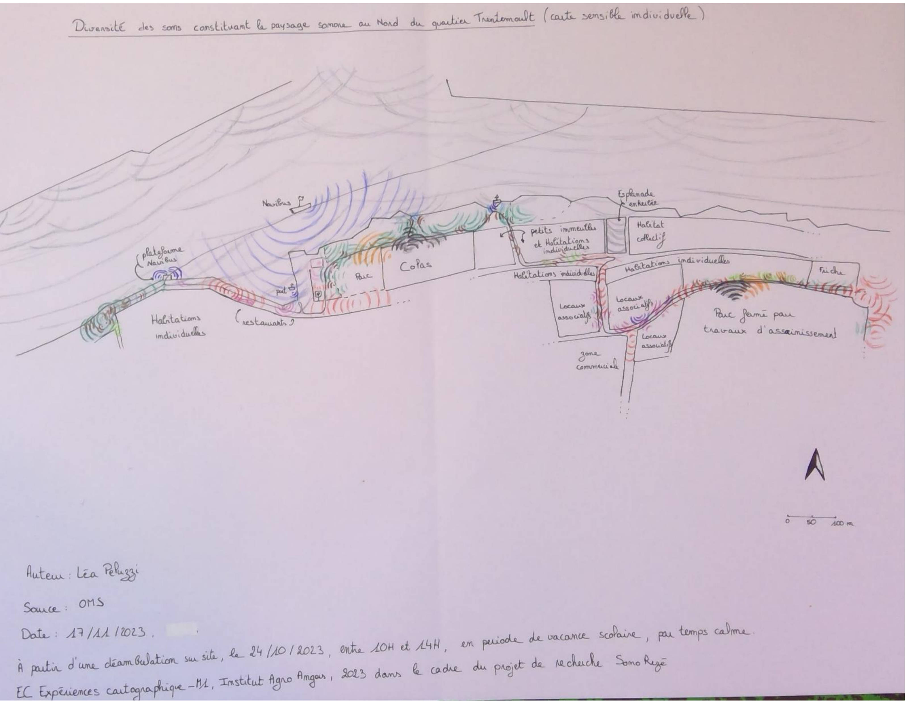
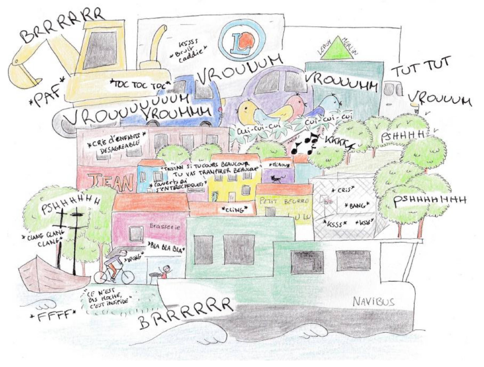
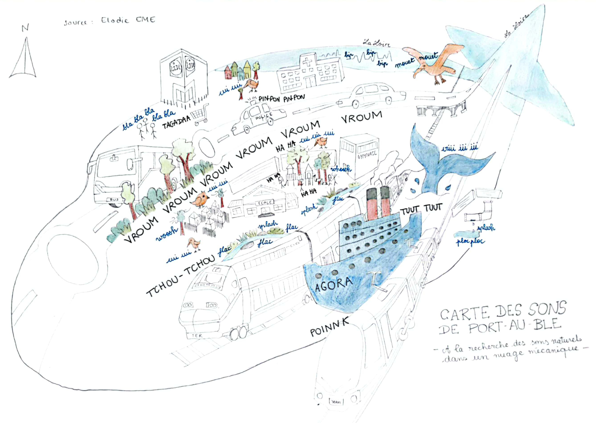
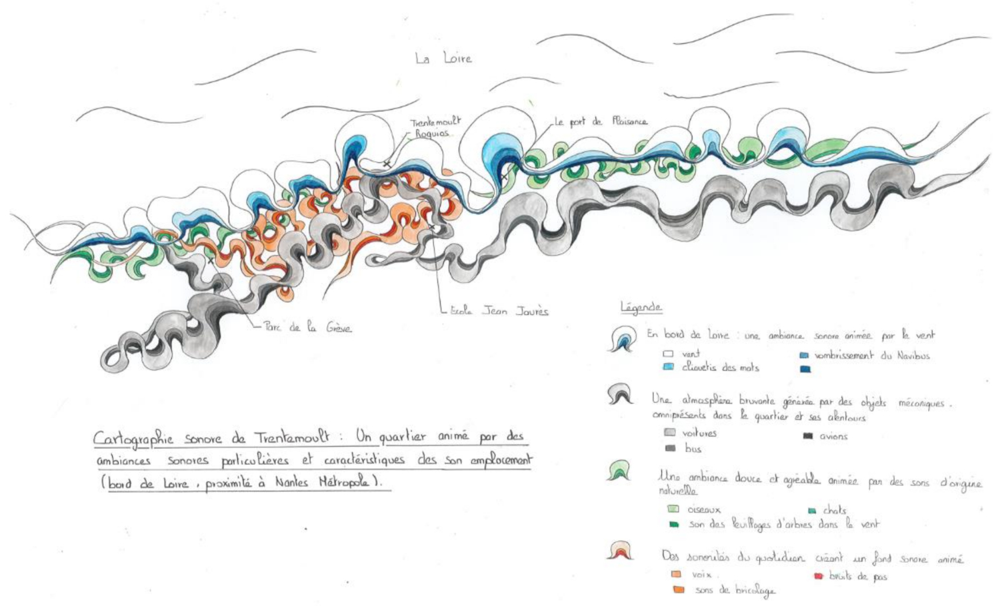
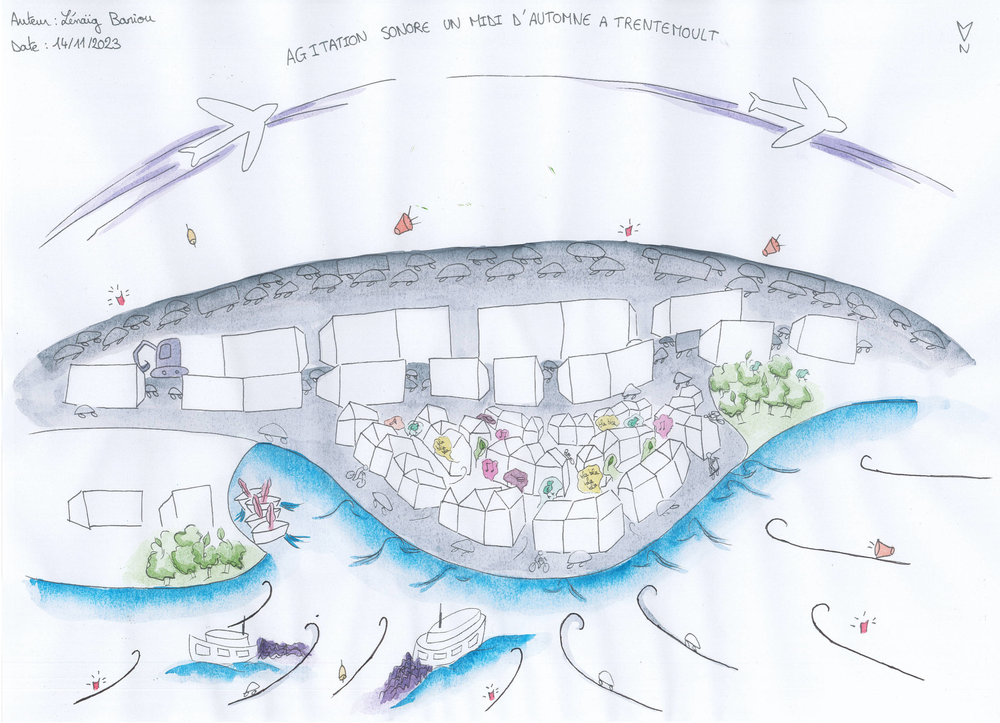

Comment des étudiants en paysage perçoivent les paysages sonores de Rezé ?
Dans le cadre de leur cursus en 1ère année de Master spécialité "paysage" à l'Institut Agro d'Angers, douze étudiants ont été amenés à développer une analyse du paysage sonore de la ville de Rezé. Ce travail a donné lieu à la production de cartes sensibles, qui permettent de représenter de manière graphique le ressenti et la perception de son environnement à travers un prisme donné, ici le son.
Ce travail a été mené en collaboration avec les deux écoles élémentaires Jean Jaurès et Port-au-Blé de Rezé, avec des classes de CM1 et CM2.
Les étudiants ont réalisé ce travail dans le cadre de l'unité d'enseignement "Expériences cartographiques" et étaient encadrés par les enseignantes responsables : Véronique Beaujouan et Lise Saporita.
Cette intervention a donné lieu à deux types de restitutions :
1- cartes sensibles individuelles. Chaque étudiant disposait d'une journée pour arpenter les alentours des écoles Jean Jaurès et Port-au-Blé, dans l'objectif de s'imprégner du paysage sonore et de pouvoir en faire une restitution (carto)graphique. Les cartes présentées ci-dessous sont le fruit de leur travail.
2- cartes sensibles collectives montrant les perceptions des paysages sonores par les enfants, répartis en 4 groupes de travail. À l’issue d’une journée d’atelier avec les enfants, les étudiants ont réalisé un travail de synthèse et de mise en carte des informations ainsi collectées
Sur cette page nous présentons les cartes sensibles réalisées de manière individuelle par les étudiants.
La partie du travail concernant la réalisation de cartes sensibles avec les écoliers est visible sur la page "Cartes sensibles - Écoliers".

"Cette carte sensible illustre le paysage sonore d’une journée d’octobre autour de l’école élémentaire Port-au-Blé, à Rezé. La carte est dite sensible car elle illustre mon ressenti du paysage sonore du quartier et non une vérité établie.
Sur cette représentation j’ai choisi de mettre en avant les principaux sons entendus autour de l’école qui m’ont marqué. Ces sons sont symbolisés par des onomatopées qui permettent une compréhension universelle de la carte.
En effet, l’un des objectifs était de rendre cette carte accessible à tous malgré son aspect sensible et subjectif. En plus des onomatopées, la taille des différentes typographies et les nuances de couleurs viennent transmettre mon ressenti pour ces sons. Ces deux éléments illustrent l’importance et l’intensité des différentes sonorités du quartier."

"L’onomatomap est une maquette des paysages sonores du quartier de Port au Blé qui se veut intuitive. Elle permet par le biais des onomatopées que l’on retrouve aussi bien dans les livres d’enfants, les bandes dessinées plus complexes ou encore les mangas, de s’adresser à tout un chacun. Les sons apparaissent ainsi en trois dimensions pour mieux apprécier leur portée et la place qu’ils peuvent prendre dans ce paysage, que ce soit de façon ponctuelle ou permanente. Tout comme le fait que la curiosité est nécessaire à la compréhension de ce qui nous entoure, cette maquette doit être manipulée pour mieux en connaitre toutes les sonorités et comprendre ainsi comment elles peuvent s’imbriquer."

Diversité des sons constituant le paysage sonore au Nord du quartier de Trentemoult, à Rezé
"Ce qui m’a marqué durant l’arpentage du quartier de Trentemoult, c’est le contraste entre le calme apparent des rues, en ce mardi matin de vacances scolaire, et le brouhaha constant produit par une myriade de sons différents et simultanés. Cette palette de sons s’entremêle et/ou se fait concurrence.
Le jour de l’arpentage, j’ai avancé en prenant des notes en continue, de tout ce que j’entendais. J’ai pu donc reconstituer l’ambiance sonore de chaque endroit que j’ai visité, presque mètre par mètre. J’ai dû limiter la représentation de ce paysage sonore à une fraction de l’itinéraire que j’ai parcouru ce jour-là, car je n’ai pas voulu résumer ce que j’avais entendu. Au contraire j’ai voulu représenter le maximum de sons possible, en les localisant le plus précisément possible.
Cela représente bien, d’après moi, la richesse sonore de ce quartier, et le fait que l’ambiance sonore est en mouvement perpétuelle et change d’un instant à l’autre.
J’ai essayé de traduire certaines des choses qui m’ont étonné. Chaque arbre, selon sa auteur et son type de feuillage, produit un son différent. La palette végétale d’un jardin induit donc une palette sonore très particulière. Sans surprise, la répartition des oiseaux suit la végétation, mais dans des conditions telles que celle de Trentemoult, il peut y avoir plus de 4 espèces d’oiseaux au même moment dans un jardin, tous distinguables par leur chant si on passe suffisamment de temps à les écouter.
La quantité de sons représenté et la superposition des sons rend la carte très fatigante à lire si on la lit en détail. J’ai conscience de cette limite et néanmoins j’aime qu’il en soit ainsi. Cela fait écho à l’épuisement que j’ai constaté après avoir passé plusieurs heures à sur-mobiliser consciemment mon audition. Epuisement qui montre le peu d’attention que je porte habituellement à l’aspect sonore du paysage qui m’entoure."

"Trentemoult de face depuis la Loire car cela représente mon parcours au sein de ce quartier. Autrement dis je suis arrivée en Navibus, puis j’ai longé le quai Marcel Boissard, je me suis baladée dans les ruelles étroites avec les maisons colorées et l’école, puis dans le parc Lancelot, la rue Californie avec ses nombreux oiseaux, après j’ai traversé la rue Ordronneau qui est un axe routier important entourés de ses commerces tels que le E.Leclerc ou encore Leroy Merlin, enfin j’ai terminé par la zone de chantier au niveau de la rue de l’Abbé Grégoire.
J’ai représenté les sons via des onomatopées ainsi que des phrases que j’ai entendu. Les éléments que je trouvais les plus bruyants sont représentés en gros ainsi que les onomatopées (le chantier par un tractopelle, Navibus, école, voitures..) et en plus petit les sons moins importants (petites rues étroites avec son intimes, parc désert lors de mon passage, port..).
Pour confectionner cette carte, j’ai utilisé des crayons à encre UniPin, une feuille canson format A4 ainsi que des crayons de couleur."

Carte des sons de Port-au-Blé : à la recherche des sons naturels dans un nuage mécanique
"Je me suis inspirée des sons écoutés à travers un regard adulte mais retranscrits sous un angle plus imagé. L’objectif est de montrer que les subtilités sonores complexes du quartier de Port-au-Blé nous permettent de nous rendre compte qu’au sein d’un environnement urbain bruyant et chaotique, il est toujours possible de découvrir des sonorités plaisantes nous ramenant à la nature."

Cartographie de Trentemoult : un quartier animé par des ambiances sonores particulières et caractéristiques des son emplacement.
"Cette cartographie sonore de Trentemoult illustre le quartier au travers des différentes ambiances sonores que l’on peut y rencontrer. Celles-ci sont portées par différents éléments caractéristiques de l’emplacement du quartier. La proximité à La Loire ou encore les nombreux sons mécaniques découlant des axes de communication (aéroport, gares...) façonnent des atmosphères sonores variées et dont la perception varie d’un espace à l’autre. Cette représentation illustre ces sonorités au moyen d’ondulations soulignant d’une part l’ambiance par la couleur et d’autre part l’intensité par la taille des formes."

Cette carte vise à mettre en évidence la diversité et l’intensité des sons ainsi que leur diffusion au sein du quartier de Trentemoult. Elle met en valeur l’impact du bâti et du vent dans la propagation du son. Pour traduire cela, les sons sont assimilés à une image proportionnelle à l’intensité du son. L’intensité des couleurs est assimilée à la diffusion du son, en revanche, le bâti, agissant comme un barrage, est laissé en blanc.
"En ce midi du 25 Octobre 2023, les sonorités du quartier de Trentemoult se mêlent pour créer une agitation des sons.
Le Navibus et les avions, colorés en violet, couvrent les sons avec leurs passages réguliers. Les voitures et la rumeur de Nantes enrobent le quartier. Ces sons créent une atmosphère avec un bruit de fond constant et diffusent des sonorités mécaniques représentées par des nuances de gris. Le quartier résidentiel est protégé grâce à son bâti. Malgré les engouffrements de sons à travers les ruelles, le quotidien des Rezéens anime les rues par des sonorités douces. La saison estivale étant passée, les touristes se font rares, le quartier retrouve son calme."